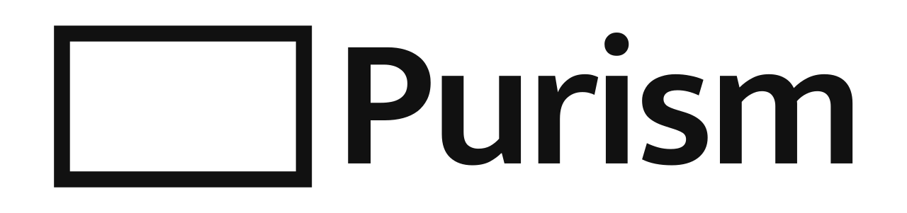
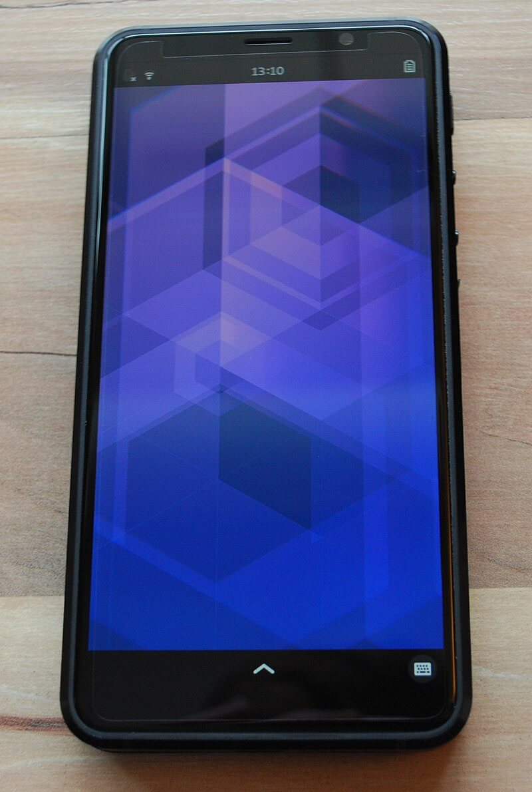
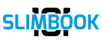

Alternativas libres para el hogar
Además de los programas, también los aparatos tienen alternativas libres: ordenadores, tabletas y móviles. Aunque la oferta, al menos en hardware, no es muy amplia, existen algunas soluciones. Existen empresas, pocas, que proporcionan Linux preinstalado y existen otras, todavía menos, que incluyen hardware que utiliza software libre en lugar del propietario.
El concepto de software libre es también aplicable al hardware, al menos parcialmente, ya que su naturaleza física hace que sea radicalmente diferente. Existe hardware del que se publican todas sus especificaciones de forma que el proceso de su fabricación es público. Sin embargo para la mayoría de componentes se necesita un equipo técnico altamente especializado que es difícil de tener, de forma que la réplica de ciertos dispositivos suele ser complicada si no directamente imposible. Bajo esta filosofía se encuentra las placas base Arduino que ya están siendo utilizadas en robótica en muchos centros educativos. Igualmente podrían entrar en esta categoría los ordenadores Raspberry Pi que se han convertido en ordenadores de muy bajo costo utilizados para la enseñanza de la informática así como para su uso en lugares donde otros ordenadores son difíciles de conseguir.
No obstante prácticamente no existen proyectos comerciales disponibles para el gran público compuestos por hardware enteramente libre. Más adelante se describen algunas de las pocas empresas que intentan maximizar la privacidad de quien los usa dentro de lo tecnológicamente posible en la actualidad.
Equipos libres
Conseguir equipos libres no es tan fácil como conseguir programas libres. Con un ordenador de sobremesa, un portátil o un móvil estándar, la respuesta es desgraciadamente negativa. El motivo es que la fabricación de determinados elementos es tan especializada que no está al alcance de cualquiera. Sin embargo es posible acercarse a esa utopía y hacerla realidad en una gran proporción.
Purism

Purism es una empresa estadounidense totalmente comprometida con el software libre, hasta tal punto que no solo disponen de hardware exclusivo sino que el sistema operativo que utilizan también lo han creado ellos estando libre de programas propietarios en un 100 %. Una de las características de los aparatos de Purism es la presencia de interruptores físicos para desconectar ciertos elementos como GPS, cámaras, etc. Esto último asegura una auténtica privacidad.
El sistema operativo es PureOS que funciona en todos los aparatos que disponen. Este sistema operativo no es fácil de instalar en un ordenador convencional ya que carece de controladores propietarios, por lo que es posible encontrar que la tarjeta de red, la tarjeta gráfica u otros componentes no funcionen correctamente. Esto es debido a que Purism solo utiliza hardware que funciona con software libre. No obstante, el sistema operativo está disponible para su descarga desde el enlace anterior.
Los portátiles
Los portátiles de Purism, que se renuevan cada pocos años y se diferencian sobre todo en el tamaño de la pantalla, llevan un procesador Intel en el que se ha desactivado el software que se ejecuta de forma autónoma, por lo que el código desconocido queda inutilizado. Utilizan una BIOS de código abierto llamada coreboot que solo ejecuta lo necesario para arrancar el ordenador, sin código extra propietario o de dudosa utilidad. Cada uno de los chips que llevan (tarjeta gráfica, sonido, wifi, etc.) es individual, evitando los que comprometen la privacidad y seleccionando los que la respetan.
El mayor inconveniente es el elevado precio al que se venden debido a las especiales características de todos sus componentes.
Los teléfonos
En dispositivos móviles es mucho más difícil encontrar productos basados en software libre ya que en la práctica solo una empresa los produce al gran público, esta empresa es la estadounidense Purism, que ha creado una tableta y un móvil siguiendo la misma filosofía que los ordenadores, piezas de hardware seleccionadas para evitar la ejecución de código desconocido y uso de software libre.
El Librem 5 dispone de interruptores para desconectar GPS, wifi o la cámara, además funciona con el sistema operativo basado en Linux, PureOS.

La empresa ofrece dos modelos de teléfono. El Liberty Phone lleva la electrónica fabricada en Estados Unidos, con la cadena de producción controlada, mientras que el Librem 5 se monta con componentes de origen chino. La diferencia de precio entre ambos es notable.
Technoethical
Technoethical es una empresa rumana que apuesta por el software libre así como por el hardware libre de firmware. Está formada por un grupo de activistas de los programas libres que venden hardware con software libre y con Libreboot preinstalado. Libreboot se encarga del arranque del ordenador sin programas propietarios ni ocultos al usuario, similar a coreboot utilizado por Purism.
Distribuyen sus productos a todo el mundo y fabrican ordenadores de sobremesa, portátiles, diversos dispositivos como memorias USB, adaptadores para tarjeta gráfica, etc. y dispositivos móviles. Estos últimos son teléfonos inteligentes en los que han reemplazado el sistema operativo original Android que viene de fábrica y lo han reemplazado por software libre.
Vant
Vant es una empresa española, concretamente de Valencia, especializada en el montaje de ordenadores de sobremesa, portátiles y diversos accesorios. Dispone de una gama amplia de ordenadores que abarcan las necesidades de la mayoría de los usuarios. Además cada ordenador puede personalizarse desde su página web ya sea aumentando la memoria, cambiando el procesador, cambiando el disco duro, etc. Puede elegirse el sistema operativo deseado como Ubuntu, Linux Mint, Kubuntu, etc. Si la distribución deseada no aparece en su lista, basta con indicarlo en los comentarios del pedido.
Slimbook

Slimbook es también una empresa española, situada en Valencia, que monta y vende ordenadores con Linux. Disponen de su propia distribución llamada Slimbook OS que está basada en Ubuntu. Esta distribución de Linux tiene programas propios y está optimizada para los ordenadores que distribuyen. De todas formas puede pedirse la instalación de otra distribución diferente de Linux sin problemas.
La oferta consta de ordenadores de sobremesa, ordenadores todo en uno (la caja se coloca detrás de la pantalla), portátiles y otros accesorios. En cada caso se pueden personalizar los componentes, así como el sistema operativo con el que se recibe.
Framework
Framework es una empresa estadounidense que vende portátiles pensados para durar. Sus piezas van numeradas y se cambian con un destornillador, de forma que la batería, la pantalla o el teclado pueden sustituirse sin acudir a un servicio técnico. Los puertos son tarjetas intercambiables, así que cada persona elige los que necesita. No vende solo software libre, pero mantiene soporte oficial para varias distribuciones de Linux y publica las guías para instalarlas. Envía a España y sigue vendiendo las piezas por separado años después, que es lo que de verdad alarga la vida del ordenador.
Murena
Murena es una empresa francesa que vende teléfonos y tabletas con /e/OS, una versión de Android sin los servicios de Google. El sistema es software libre y puede instalarse por cuenta propia en bastantes modelos, aunque aquí llega ya preparado. Entre los aparatos que distribuye están los Fairphone, diseñados para repararse en casa y con materiales de origen controlado. Es la vía más sencilla para tener un móvil con Android libre sin pasar por la instalación, un asunto que se trata en «Herramientas para Android».
Para saber si un equipo respeta de verdad la libertad de quien lo usa existe la certificación «Respeta tu libertad», que concede la Free Software Foundation. Exige que todo el software del producto sea libre, que se pueda sustituir por una versión modificada y que la documentación se publique con licencia libre, y prohíbe los programas espía y las puertas traseras. La lista de productos certificados es corta y en ella figuran fabricantes como Vikings o ThinkPenguin, pero sirve de referencia al comparar.
![Infografía «Tres grados de libertad al comprar un equipo», que compara tres opciones. Con Linux preinstalado, el ordenador llega funcionando con la distribución elegida, sin licencia de Windows, aunque el arranque y algunos controladores siguen siendo propietarios; lo venden Vant o Slimbook. Con un equipo reparable y modular, las piezas se cambian en casa y hay repuestos años después, pero el firmware sigue cerrado y la libertad está en el mantenimiento; lo vende Framework. Con un equipo certificado «Respeta tu libertad», todo el software es libre, incluido el arranque, con interruptores físicos y documentación libre, a cambio de un catálogo corto, precio alto y componentes menos potentes; lo venden Purism, Technoethical, Vikings o ThinkPenguin. Aviso final: ningún equipo es totalmente libre, ya que ni siquiera los certificados publican el diseño de todos sus componentes.](../content/resources/infografia-grados-libertad-equipos.jpg "Tres grados de libertad al comprar un equipo")
Sistemas operativos libres recomendados
A continuación se presenta una selección, de entre los cientos de distribuciones disponibles, donde se ha tenido en cuenta la ausencia de conocimientos necesaria, tanto para su instalación, como para su uso así como la facilidad de uso para quienes ya están familiarizados con Windows. El orden seguido no es en absoluto el de preferencia sino que es alfabético. Existen muchas distribuciones más y la selección que se presenta aquí puede no coincidir con los gustos y preferencias de otras personas, sin embargo, todas las distribuciones mostradas cumplen a la perfección su función en un ordenador familiar.
Para la instalación de cualquiera de estas distribuciones es suficiente con descargarse la versión deseada de su página web, que suele ser un archivo de tipo imagen ISO, y pasarla a una memoria USB con la cual se arrancará el ordenador. El proceso es prácticamente el mismo para cualquiera de ellas y se explica paso a paso en «Instalar GNU/Linux desde una memoria USB».
Fedora
Fedora es una distribución patrocinada por Red Hat que sirve de banco de pruebas para sus versiones de empresa. Su edición Workstation lleva el escritorio GNOME casi sin cambios y estrena antes que otras las novedades del software libre. Publica una versión cada seis meses, de modo que conviene a quien prefiere tener lo último y no le importa actualizar a menudo. Solo incluye software libre, así que algunos códecs y controladores hay que añadirlos aparte.
Linux Mint
Linux Mint tiene origen franco-irlandés en 2006 y pretende ser un sistema elegante y sencillo de utilizar, algo que parecen haber conseguido. Es una de las distribuciones linux más utilizadas y se recomienda a quien desea un sistema operativo sencillo y falto de problemas. Dispone de una potente comunidad que permite resolver cualquier duda o problema que se tenga.
Se pueden descargar varias versiones de Linux Mint:
- Cinnamon. Este es el escritorio más usado y que se ofrece en primer lugar en esta distribución.
- MATE. Otro escritorio sobrio y robusto.
- Xfce. Este escritorio es ligero y configurable, funcionará estupendamente en máquinas de pocas prestaciones.

Probablemente es una de las distribuciones con más compatibilidad con todo tipo de máquinas por lo que se puede intentar su instalación en equipos en los que otras no acaban de funcionar.
MX Linux
MX Linux proviene de la colaboración entre dos distribuciones preexistentes, AntiX y MEPIS, que se han fusionado en una sola para formar esta. MX Linux toma como base a Debian y le añade una serie de herramientas que hacen de este sistema operativo uno de los más completos y funcionales. Con él es posible controlar aspectos que en otros resultan complicados, como puede ser las diferentes pantallas de arranque e inicio que ofrece, las herramientas para reparar el arranque, utilidades para formatear memorias USB o crear memorias con el sistema operativo incorporado y que además mantienen los cambios que se hagan (es lo que se llama memoria persistente), entre otros programas que lleva incorporado.

Se ofrece sobre todo con el entorno de escritorio Xfce, que es su opción principal, y también con KDE Plasma y con Fluxbox. Este entorno no es quizás uno de los más vistosos, pero sí uno de los más configurables a gusto de quien lo utiliza.
Ubuntu
Ubuntu es la distribución más conocida y la base sobre la que están construidas Linux Mint y Zorin OS, entre otras muchas. Cada dos años publica una versión de mantenimiento ampliado, con cinco años de actualizaciones de seguridad, lo que resulta cómodo en un ordenador familiar. Su escritorio es GNOME con algunos añadidos propios. Al ser la más usada, cualquier duda suele estar ya resuelta en foros y manuales en español.
Zorin OS
Este sistema operativo, que está basado en Ubuntu, ha sido desarrollado por dos hermanos irlandeses, Kyrill y Artyom Zorin. Lo que empezó en 2009 como un pequeño proyecto ha terminado convirtiéndose en una de las distribuciones Linux de referencia cuando se habla de quienes nunca han tenido contacto con este sistema operativo. Una de sus metas es hacer el sistema operativo sencillo de utilizar, por lo que mantiene algunas similitudes con Windows, para que quien llega desde allí se encuentre en un entorno más o menos conocido.
Zorin OS tiene diversas versiones: Zorin Core, la versión desarrollada para ordenadores actuales, que viene a ser la normal, y Zorin OS Lite, con el escritorio Xfce, para los más antiguos, que se publica hasta la versión 18, con soporte hasta junio de 2029; el proyecto no la mantendrá en la 19. Ambas son idénticas en cuanto a prestaciones y uso, y prácticamente solo varían en los requisitos mínimos de la máquina.
Existe una versión de pago, llamada Zorin OS Pro, que añade escritorios y aplicaciones adicionales y da soporte para cualquier problema que pudiese surgir. Hay además una edición pensada para centros educativos, que se describe en «GNU/Linux y educación».
En este sistema operativo destaca su estabilidad, simplicidad de uso, la posibilidad de conectar el ordenador con el móvil, por lo que pueden recibirse notificaciones en el escritorio y también interactuar con el mismo enviando archivos, haciéndolo sonar e incluso es posible controlarlo remotamente; también dispone de soporte para ordenadores táctiles convertibles en tableta.